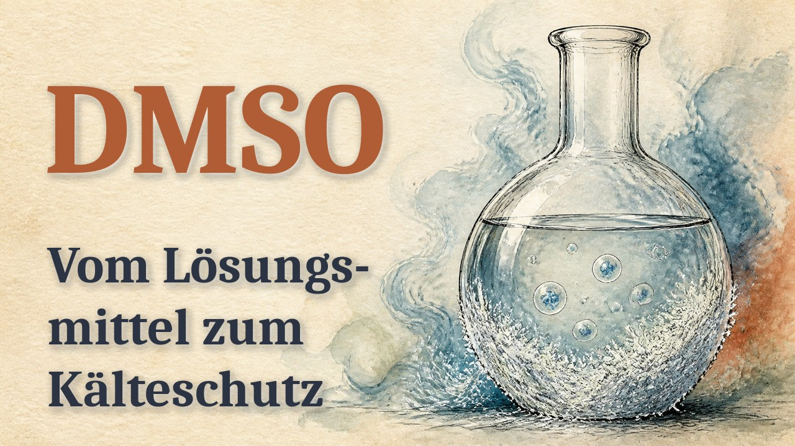

<title>DMSO · Erklärvideo (Aquarell) · Vorschau</title>
<meta name="claude:viewport-fit-sides" content="cover">
<style>
  /* Eine Spalte, je Fassung eine Karte mit Player; die neueste oben. */
  :root { --grund: #f4f1ec; --karte: #ffffff; --tinte: #1f2430; --grau: #646b75; --linie: #ddd6cc; --akzent: #324e7a;
    --akzent-text: #ffffff; --gut: #2f7d50; --pruefen: #a35a12; --pruefen-grund: #fbebd9; }
  @media (prefers-color-scheme: dark) { :root:not([data-theme="light"]) { --grund: #15181d; --karte: #1e232a; --tinte: #e8eaee;
    --grau: #9aa3ad; --linie: #2f3640; --akzent: #8fb0e3; --akzent-text: #10151c; --gut: #6fcf97; --pruefen: #f0b067;
    --pruefen-grund: #3a2a17; color-scheme: dark } }
  :root[data-theme="dark"] { --grund: #15181d; --karte: #1e232a; --tinte: #e8eaee; --grau: #9aa3ad; --linie: #2f3640;
    --akzent: #8fb0e3; --akzent-text: #10151c; --gut: #6fcf97; --pruefen: #f0b067; --pruefen-grund: #3a2a17; color-scheme: dark }
  * { box-sizing: border-box; }
  body { background: var(--grund); color: var(--tinte); font: 16px/1.5 system-ui, -apple-system, "Segoe UI", sans-serif; }
  main { max-width: 760px; margin: 0 auto; display: grid; gap: 18px; padding-block: 24px 48px;
    padding-left: max(16px, env(safe-area-inset-left, 0px)); padding-right: max(16px, env(safe-area-inset-right, 0px)); }
  h1 { margin: 0; font: 700 clamp(24px, 6vw, 34px)/1.15 Georgia, "Times New Roman", serif; text-wrap: balance; }
  .aufgabe { margin: 0; padding: 12px 14px; border-left: 4px solid var(--pruefen); background: var(--pruefen-grund); border-radius: 6px; }
  .video { display: grid; gap: 8px; padding: 14px; background: var(--karte); border: 1px solid var(--linie); border-radius: 14px; }
  .kopfzeile { display: flex; flex-wrap: wrap; align-items: baseline; gap: 6px 10px; }
  .video h2 { margin: 0; font: 650 19px/1.3 system-ui, sans-serif; }
  .marke { font: 600 12px/1 system-ui, sans-serif; letter-spacing: .05em; text-transform: uppercase; padding: 4px 8px; border-radius: 6px; }
  .marke.pruefen { background: var(--pruefen-grund); color: var(--pruefen); }
  .marke.info { background: var(--linie); color: var(--grau); }
  .stand, .notiz { margin: 0; font-size: 14px; color: var(--grau); }
  video { width: 100%; max-width: 100%; aspect-ratio: 16 / 9; background: #000; border-radius: 10px; }
  .urteil { display: flex; gap: 8px; }
  .urteil button, .senden { border: 1px solid var(--linie); background: none; color: var(--tinte); border-radius: 999px; padding: 9px 16px;
    font: 600 15px/1 system-ui, sans-serif; cursor: pointer; }
  .urteil button[aria-pressed="true"][data-u="passt"] { background: var(--gut); border-color: var(--gut); color: var(--karte); }
  .urteil button[aria-pressed="true"][data-u="aendern"] { background: var(--pruefen); border-color: var(--pruefen); color: var(--karte); }
  .senden { background: var(--akzent); border-color: var(--akzent); color: var(--akzent-text); border-radius: 10px; }
  textarea { width: 100%; font: 16px/1.4 system-ui, sans-serif; color: var(--tinte); background: var(--grund); border: 1px solid var(--linie);
    border-radius: 8px; padding: 8px 10px; resize: vertical; }
  .zeile { display: flex; flex-wrap: wrap; gap: 10px; align-items: center; }
  .melde { font-size: 14px; color: var(--gut); }
  button:focus-visible, textarea:focus-visible { outline: 3px solid var(--akzent); outline-offset: 2px; }
</style>
<main>
  <h1>DMSO · Erklärvideo (Aquarell) · Vorschau</h1>
  <p class="aufgabe"><b>Deine Aufgabe:</b> Endfassung mit abgenommenem Ton (Aussprache 4, „D. M. S. O.“). Bitte ansehen und „passt“ oder „ändern“ tippen. Ton kommt beim Antippen von ▶; nichts wird heruntergeladen.</p>
  <article class="video" id="v1" data-id="v_0419d86454" data-titel="G  Aquarell und Tusche · Endfassung">
      <div class="kopfzeile"><h2>G  Aquarell und Tusche · Endfassung</h2><span class="marke pruefen">zu prüfen</span></div>
      <p class="stand">Stand 11.11., 11:25 · 15.5 MB</p>
      <video controls playsinline preload="metadata" poster="videos/v_0419d86454.jpg" src="videos/v_0419d86454.mp4"></video>
      <p class="notiz">Ton am 11.11. abgenommen (11 Stellen ok): Aussprache „Dimethyl-sulfoxid, kurz D. M. S. O.“, „Der MSO“ am Anfang behoben. 6:47, 847 Wörter.</p>
      <div class="urteil"><button type="button" data-u="passt">✓ passt</button><button type="button" data-u="aendern">ändern</button></div><textarea rows="2" placeholder="Was soll anders werden?" aria-label="Notiz zu G  Aquarell und Tusche · Endfassung"></textarea><div class="zeile"><button type="button" class="senden">An Claude</button><span class="melde" role="status" aria-live="polite"></span></div>
    </article>
</main><section style="margin:24px auto;max-width:900px;padding:0 16px">
<h2 style="font:700 22px Georgia,serif">YouTube: Vorschaubild und Beschreibung</h2>

<p><button type="button" id="kopier" style="font:inherit;font-weight:600;padding:12px 16px;border-radius:10px;min-height:48px">Beschreibung kopieren</button> <span id="kopiert"></span></p>
<textarea id="beschr" rows="18" readonly style="width:100%;font:15px/1.4 system-ui,sans-serif;padding:10px;border-radius:10px">DMSO: Vom Lösungsmittel zum Kälteschutz
Ein Stoff aus der Papierfabrik schützt Zellen beim Einfrieren und wurde einmal als Wundermittel gefeiert. In diesem Erklärvideo geht es um DMSO (Dimethylsulfoxid): Ein russischer Chemiker beschreibt es 1867, britische Forscher entdecken 1959 den Kälteschutz für Zellen, in den 1960er-Jahren folgen Hype und Vollbremsung. Danach: wofür DMSO heute zugelassen ist, was Studien zu Schmerzen, Arthrose und anderen Anwendungen zeigen und was bei der Selbstanwendung kritisch ist. Keine Anleitung, keine Dosierungen.

Kapitel
0:00 Einleitung
0:25 Ein Stoff aus dem Labor
1:15 Kälteschutz für Zellen
2:05 Der große Hype
2:55 Wofür es zugelassen ist
4:09 Was Studien zeigen
5:17 Selbstanwendung: was kritisch ist
6:14 Fazit

Quellen (Nummern wie im Video)
[1] Saytzeff 1867: https://doi.org/10.1002/jlac.18671440205
[2] May 2012: https://www.chm.bris.ac.uk/motm/DMSO/DMSOh.htm
[3] Capriotti 2012: https://pmc.ncbi.nlm.nih.gov/articles/PMC3460663/
[4] Lovelock 1959: https://doi.org/10.1038/1831394a0
[5] Awan 2020: https://doi.org/10.2217/rme-2019-0145
[6] Bennett 2024: https://doi.org/10.1016/j.jcyt.2024.02.006
[7] Kollerup Madsen 2019: https://doi.org/10.12688/f1000research.16642.2
[8] Jacob 1967: https://doi.org/10.1016/0002-9610(67)90166-3
[9] TIME 1980: https://time.com/archive/6857944/medicine-dmso-dustup
[10] Rubin 1966: https://doi.org/10.1126/science.153.3731.83
[11] Science News 2016: https://www.sciencenews.org/article/50-years-ago-promising-agent-pulled
[12] FDA 1978: https://www.accessdata.fda.gov/scripts/cder/daf/index.cfm?event=overview.process&amp;ApplNo=017788
[13] Perez-Marrero 1988: https://doi.org/10.1016/S0022-5347(17)41478-9
[14] Pérez Fidalgo 2012: https://doi.org/10.1093/annonc/mds294
[15] Dolobene AT 2019: https://apps.apoverlag.at/avout/shopindex/FILEs/GI/GIA121937.pdf
[16] Die PTA 2022: https://www.diepta.de/news/rezeptur-mischen-possible-schwefeliger-schmerzstiller-dmso
[17] Zostrum 2005: https://assets.hpra.ie/products/Human/19163/LicenseSPC_PA0590-017-001_30092005144323.pdf
[18] 21 CFR 524.660: https://www.ecfr.gov/current/title-21/chapter-I/subchapter-E/part-524/section-524.660
[19] Zuurmond 1996: https://doi.org/10.1111/j.1399-6576.1996.tb04446.x
[20] Perez 2003: https://doi.org/10.1016/S0304-3959(02)00414-1
[21] DGN 2018: https://register.awmf.org/assets/guidelines/030-116l_S1_Schmerzsyndrome_CRPS_2018-09-abgelaufen.pdf
[22] Brien 2011: https://doi.org/10.1093/ecam/nep045
[23] Brien 2008: https://doi.org/10.1016/j.joca.2008.03.002
[24] Williams 1985: https://doi.org/10.1002/art.1780280311
[25] MSK: https://www.mskcc.org/cancer-care/integrative-medicine/herbs/dimethylsulfoxide
[26] Hall 2014: https://doi.org/10.1158/0008-5472.CAN-14-0247
[27] Verbraucherzentrale 2025: https://www.verbraucherzentrale.de/wissen/lebensmittel/nahrungsergaenzungsmittel/miracle-mineral-supplement-mms-erhebliche-gesundheitsgefahr-11044

Gut, dass du dich informierst: Das Video kann das Gespräch mit Arzt oder Ärztin unterstützen, aber nicht ersetzen.
Sprecherstimme synthetisch (ElevenLabs), Bilder KI-generiert.

#DMSO #Dimethylsulfoxid #Erklärvideo #Wissenschaftsgeschichte #Medizin
</textarea>
</section>
<script>document.getElementById("kopier").addEventListener("click",function(){navigator.clipboard.writeText(document.getElementById("beschr").value).then(function(){document.getElementById("kopiert").textContent="Kopiert.";},function(){document.getElementById("kopiert").textContent="Kopieren ging nicht, bitte im Feld markieren.";});});</script>

<script>
(function () {
  var TITEL = "DMSO · Erklärvideo (Aquarell)", db = null, kom = null, anClaude = false, urteil = {};
  document.querySelectorAll("video").forEach(function (v) { v.addEventListener("play", function () {
    document.querySelectorAll("video").forEach(function (w) { if (w !== v) w.pause(); }); v.muted = false; }); });
  document.querySelectorAll(".video").forEach(function (k) {
    var id = k.dataset.id, ta = k.querySelector("textarea"), melde = k.querySelector(".melde");
    k.querySelectorAll(".urteil button").forEach(function (b) { b.addEventListener("click", function () {
      urteil[id] = b.dataset.u; k.querySelectorAll(".urteil button").forEach(function (x) { x.setAttribute("aria-pressed", String(x === b)); });
      if (b.dataset.u === "aendern" && ta) ta.focus();
      if (db) db.collection("vorschau_urteile").doc(id).set({ video: k.dataset.titel, urteil: b.dataset.u, notiz: ta ? ta.value.trim() : "", zeit: new Date().toISOString() }).catch(function () {});
    }); });
    var s = k.querySelector(".senden"); if (!s) return;
    s.addEventListener("click", function () {
      var text = "Vorschau " + TITEL + ": " + k.dataset.titel + " – " + ({ passt: "PASST", aendern: "ÄNDERN" }[urteil[id]] || "ohne Urteil") + (ta.value.trim() ? "\nNotiz: " + ta.value.trim() : "");
      if (db) db.collection("vorschau_urteile").doc(id).set({ video: k.dataset.titel, urteil: urteil[id] || null, notiz: ta.value.trim(), zeit: new Date().toISOString() }).catch(function () {});
      if (!kom || !anClaude) { melde.textContent = db ? "Gespeichert. Claude liest es beim nächsten Mal." : "Bitte Claude im Chat Bescheid geben."; return; }
      s.disabled = true;
      kom.anchorFor(k).then(function (a) { return kom.sendToClaude({ anchor: a, text: text.slice(0, 3900) }); })
        .then(function () { melde.textContent = "An Claude geschickt ✓"; }, function (e) { melde.textContent = e && e.code === "consent_required" ? "Gespeichert. Zum Senden bitte die Freigabe erlauben." : "Gespeichert, Senden fehlgeschlagen."; })
        .then(function () { s.disabled = false; });
    });
  });
  if (window.claude && claude.use) {
    claude.use("db").then(function (d) { if (d) db = d; }).catch(function () {});
    claude.use("comments").then(function (c) { if (!c || !c.canSendToClaude) return; kom = c;
      c.canSendToClaude().then(function (v) { anClaude = v === "available"; }, function () {}); }).catch(function () {});
  }
})();
</script>
